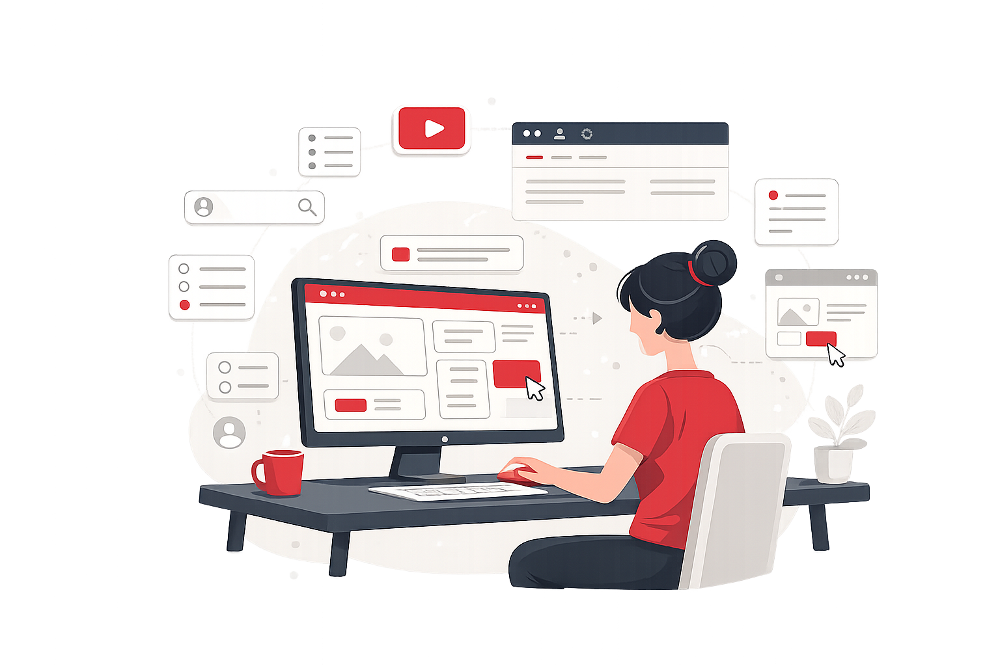

account_circle Experiencia de Usuario
Conceptos y prácticas para diseñar experiencias digitales intuitivas y memorables.
Ver tema arrow_right_altConceptos claros y ejemplos prácticos sobre diseño, experiencia de usuario y desarrollo WEB para apoyar tu aprendizaje.
Encuentra información fácil, clara y siempre disponible para ti.

Selecciona un área para ver definiciones, guías y recursos relevantes.
Conceptos y prácticas para diseñar experiencias digitales intuitivas y memorables.
Ver tema arrow_right_altPatrones, accesibilidad y buenas prácticas para construir sitios web.
Ver tema arrow_right_altMetodologías para la resolución creativa de problemas centrada en las personas.
Ver tema arrow_right_altTécnicas y evaluaciones para mantener al usuario en el centro del proceso de diseño.
Ver tema arrow_right_altPrincipios para diseñar interacciones claras y eficientes entre usuarios y sistemas.
Ver tema arrow_right_altOrganización de contenido y etiquetado para mejorar la búsqueda y comprensión.
Ver tema arrow_right_altEstrategias para crear sistemas de navegación claros e intuitivos.
Ver tema arrow_right_altPrincipios de color, tipografía y composición aplicados al diseño digital.
Ver tema arrow_right_altLecturas recomendadas para comenzar tu aprendizaje en diseño.